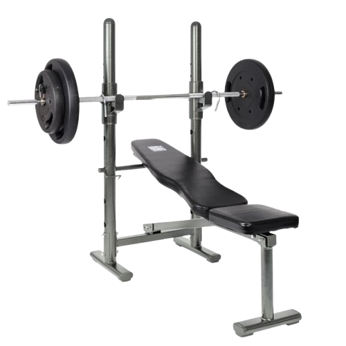

벤치프레스
- 바벨이 가슴 위쪽(명치와 어깨 사이)에 오도록 위치를 잡고, 손은 어깨 너비보다 약간 넓게 잡는다. 손의 간격은 자신이 편안하게 느껴지는 위치로 조절한다.
- 바벨을 손목과 팔꿈치가 일직선이 되도록 잡고, 손목이 꺾이지 않도록 주의한다.
- 바벨을 들어서 팔을 쭉 펴고, 가슴 위로 바벨을 위치시킨다. 팔꿈치가 너무 펴지지 않도록 살짝 구부린 상태를 유지한다.
- 이때 호흡은 뱉는다.
- 천천히 바벨을 가슴 쪽으로 내린다. 이때 팔꿈치를 몸통 옆으로 자연스럽게 내리며, 바벨이 가슴 중간 부위에 닿도록 한다.
- 바벨이 가슴에 살짝 닿으면, 숨을 내쉬면서 팔을 밀어 올려 시작 위치로 돌아온다. 가슴과 팔의 근육이 최대한 긴장될 수 있도록 집중하며 밀어낸다.
- 이때 호흡은 마신다.
주의사항
- 운동 중 어깨가 과도하게 움직이지 않도록 주의한다. 어깨가 위로 올라가지 않도록 신경 써야 한다.
- 손목이 꺾이지 않도록 주의한다. 손목이 뒤로 꺾이면 부상의 위험이 있다.
- 발이 바닥에서 떨어지지 않도록 주의한다.
- 지나치게 무거운 중량은 잘못된 자세를 유발할 수 있어 부상의 원인이 된다.
운동부위 및 효과
- 대흉근, 삼두근, 삼각근, 코어근육
- 벤치프레스는 가슴 근육을 크고 두껍게 만드는 데 매우 효과적이다.
- 지속적인 반복 운동으로 근육의 내구성과 지구력을 증가시켜 더 무거운 무게를 들 수 있게 해준다.